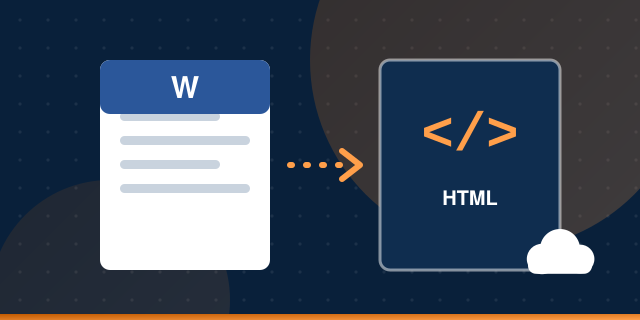

Java - MS Word to HTML Converter
Tech Stack
Core JavaApache POIApache MavenAmazon S3 APIApex
Overview
Converts specifically structured MS Word documents into HTML pages organized in a folder structure, saved locally and on Amazon S3. Apache POI reads the documents, including images, tables and paragraphs, and images are saved separately with custom names. Apex saves the converted HTML documents as Salesforce attachments using the Amazon REST API.
Key Responsibilities and Achievements
- Owned the architecture and management of the converter, along with programming and deployment of the core Java functionality.